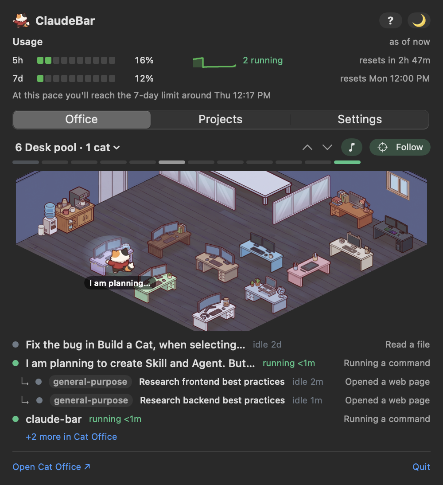
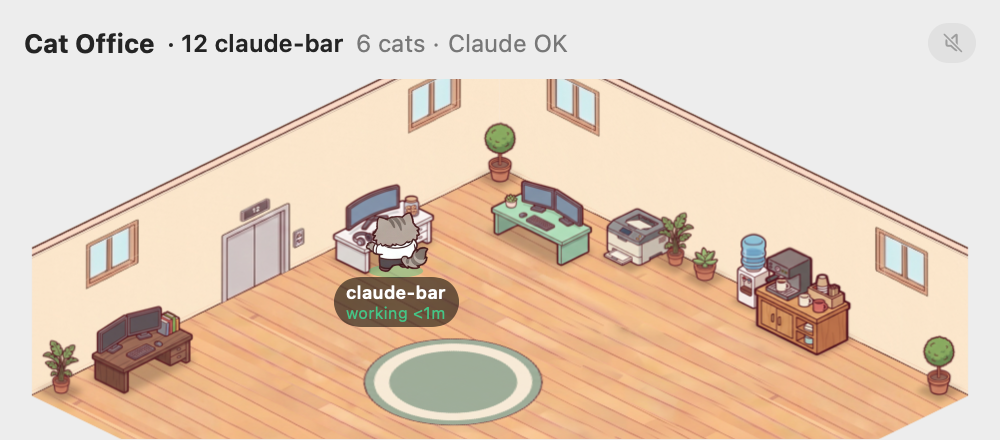
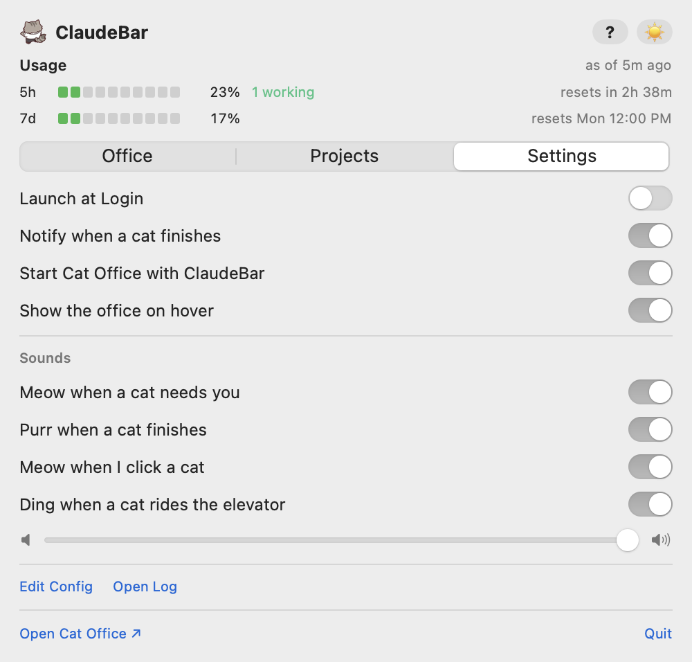

A menu bar companion for Claude Code and Cat Office: your usage limits, your projects, and your office of cats, one click away.
ClaudeBar lives in your Mac's menu bar as a small cat, with your usage beside it.
| You see | It means |
|---|---|
| The cat | The cat that matters right now: one that needs you first, else one that's working, else one asleep. |
| 5h · 7d | How much of your Claude Code usage limits you've used in the current 5-hour window and the current week, and when each resets. |
| Hovering the cat | Opens a peek at the office (see Hover popup). |
| Clicking the cat | Opens the dropdown: usage at the top, then the Office, Projects and Settings tabs. |
The ? button at the top right of the dropdown opens a short help panel; ☀️ / 🌙 switches ClaudeBar between day and night (it follows your Mac until you pick).

The Office tab shows your Cat Office, one floor at a time, laid out exactly as your own Cat Office lays it out: the same desks, furniture, windows and elevator.
While a Cat Office page is open, ClaudeBar shows each cat where the browser has it, doing the same thing. Settings → Show spare cats adds the office's own cats too.
With no Cat Office page open, ClaudeBar's idle cats keep busy on their own in the Lounge (naps, books, snacks) by Cat Office's rules, and spare cats roam the whole office; with a page open they follow it exactly.
| Do this | To |
|---|---|
| Double-click the room | Zoom in on that spot (double-click again to zoom out). |
| ⌘ + scroll, or pinch | Zoom in and out smoothly. |
| Drag, or scroll | Look around while zoomed in. |
| Click "1×" | Back to the whole room. |
| Click a cat | Hear it meow. |
| 🎵 | Lofi music while the office is open; click to turn it off (🔇) or on. |
Over the room the pointer becomes Cat Office's Bongo Cat, and slaps while you hold the mouse button.

Hover the menu bar cat to peek at the office without opening the dropdown. It shows the floor Follow would pick, with the same zoom, hover cards and 🎵 button. It closes when you move away. You can turn it off in Settings.
The Projects tab lists the projects you've added, each with its branch, model, how full its context is, and its status. Add folders from the tab, or edit the list with Settings → Advanced → Edit Config.

| Setting | What it does |
|---|---|
| Launch at Login | Start ClaudeBar when you log in. |
| Notify when a cat finishes | A notification when a working cat finishes its task. |
| Start Cat Office with ClaudeBar | Start Cat Office in the background if it isn't running. |
| Show the office on hover | The hover popup. |
| Show spare cats | Also draw the office's own cats (with no Claude session). Off at first. |
| Cat sounds | All the cat sounds on or off (the 🎵 music has its own button). With it on, you see the volume and Choose sounds. |
| Choose sounds | Opens the four sounds: a meow when a cat needs you, a purr when a cat finishes (with the "finished" notification; Focus / Do Not Disturb mutes it), a meow when you click a cat, and a soft ding when a cat arrives on the floor you're watching (off at first). |
| Volume | Shown while Cat sounds is on. For all the sounds; the music plays at half of it. Letting go of the slider plays a meow at the new level. |
Under Advanced: Refresh office art checks Cat Office straight away for changed floors, furniture and characters (ClaudeBar also checks by itself about once a minute while the office is open, so an edited character shows up on its own), Edit Config and Open Log.
Sounds never pile up: at most one every 3 seconds, and the same cat won't repeat an alert within a minute.
ClaudeBar is built to be safe to try: nothing changes until you click Continue, everything is backed up first, and you can undo it all from Settings → Undo ClaudeBar's changes…. See What ClaudeBar changes for every place it touches and how to undo each one.
ClaudeBar works happily on its own: your usage in the menu bar and your projects, nothing else needed. If you told setup you don't use Cat Office, the Office tab and the hover popup stay out of your way until you do.
Cat Office turns each of your Claude sessions into a cat in a little office: typing at its desk while it works, napping or snacking in the Lounge when it's idle, and waving when it needs you. With it, ClaudeBar shows that office right in your menu bar (see Office).
Cat Office is a small app your team runs on their own Macs. The easiest way to get it is to ask a teammate who already uses it: they'll be glad to share it and help you get it running. It needs Node.js.
Once it's on your Mac, open Settings → Set up ClaudeBar…. ClaudeBar finds it, and your office appears. There's no rush: come back whenever you like.
The first time ClaudeBar runs, a Set up ClaudeBar window finds your Cat Office, then offers to patch it, show your usage in the menu bar, and start it. Nothing changes until you click Continue on the Connect step. Skip for now (or closing the window) skips it, and it won't open by itself again. To run it again any time, use Settings → Set up ClaudeBar…, or the card at the top of the Office tab ("Cat Office isn't set up yet" or "Some extras are off"). If ClaudeBar replaced your status line, Settings → Restore my old status line puts yours back.
Click Start in the office. If it doesn't start, open your Cat Office folder in Terminal and run
npm run dev; ClaudeBar finds it on its own. Settings → Advanced → Open Log shows what happened when ClaudeBar
tried to start it.
The numbers come from Claude Code's status line. Turn on Usage in the menu bar in
Settings → Set up ClaudeBar… (or, from the ClaudeBar folder, run scripts/install-statusline.sh),
then send any message in Claude Code.
Floors and layouts come from your Cat Office. New floors appear within a minute; reopen the dropdown to refresh. If you edited a room in Cat Office, save it there first.
Those need ClaudeBar's small patch to Cat Office. Tick Patch Cat Office in Settings → Set up ClaudeBar…, then restart Cat Office when it asks.
Check that Settings → Cat sounds is on, then Choose sounds and the volume slider, and your Mac's volume. The finished purr is muted while Focus or Do Not Disturb is on.
Check the 🎵 button (🔇 means off) and the volume slider. The music only plays while the Office tab or the hover popup is open; in the popup it starts after about a second.
ClaudeBar's sounds and music are generated from code, made for ClaudeBar.